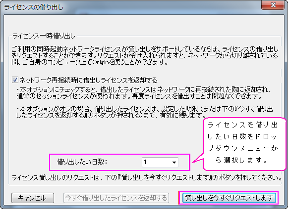
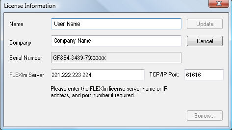

ネットワーク同時起動版の追加情報
Concurrent-Additional-Info
追加ライセンス管理情報
ネットワーク同時起動ライセンスの設定の基本ステップに加えて、次の追加トピックスをご覧頂きます
FLEXnetライセンス管理システムのさらなる情報は、FLEXnetサーバー|Help|フォルダにインストールされたFLEXnetドキュメントをご覧ください。
ネットワーク外で、同時起動版のOriginを利用する
FLEXlm同時起動ネットワーク管理は、ライセンス借り出し機能をサポートしています。これは、OriginをFLEXlmサーバから切り離しても、限られた時間の範囲でOriginを引き続き実行できることを意味します。初期設定では、最大貸出し日数は1週間です。この最大期間の情報はOriginLabのWebサイトで取得した、FFLEXnetサーバーライセンスファイルに埋め込まれています。もし、最大限の借り出し期間（最大1年間）よりも、短いまたは長く必要とする場合は、OriginLab RegInfo@OriginLab.comまでお知らせください。（日本では、正規代理店ライトストーン社にお知らせください）
ユーザーパソコンにライセンスを借し出しする。
- Originを起動します。ヘルプ：バージョン情報を選択します。
- ライセンスボタンをクリックします。
- ライセンス借り出しボタンをクリックします。
- ライセンスを借り出したい日数をドロップダウンメニューから選択します。
- 
- NOTE: ライセンスファイルにある最大日数よりも1日少ない日数がドロップダウンリストの最大日数です。要求した日数が表示されている日数にある場合は、マニュアルで日数を書き換えます。
例えば、100日をリクエストするには、100と借り出したい日数のボックスに入力します。
- 「貸し出しを今すぐリクエスト」ボタンをクリックします。
- ライセンスが正常に借り出されたことを示すメッセージが表示されます。
- ネットワーク再接続時に借出しライセンスを返却するにチェックを入れた場合には、Originを再起動する前に、パソコンをネットワークから切断してください。
NOTE:
ネットワーク再接続時に借出しライセンスを返却するにチェックが入っている場合、ネットワークが接続されたままOriginを再起動すると、自動的にライセンスが返却されてしまいます。
ローミングプロファイルでの注意
FLEXlmのライセンス借り出し機能では、ローミングプロファイルはサポートされません。しかし、次の手順でローミングプロファイルでの貸出しを行うことが出来ます。
ライセンスを貸出しするには：
- ローミングプロファイルを使用した状態でコンピュータにログインする（コンピュータがネットワークに接続されている状態で行う）
- Originを起動し、ライセンスの借り出しを行います。
- Originを閉じます。
- ネットワークから切断したあとで、コンピュータをシャットダウンする。（シャットダウンの前に接続を切ると、ローミングプロファイルサーバーにそれを保存する代わりに、ローカルに保存することが出来ます。
貸出しライセンスに接続する：
- コンピュータを起動し、ローミングプロファイルを使ってコンピュータにログインする（ネットワークに接続しない状態で行う）
- コンピュータをネットワークに接続する
- Originを起動します。貸出しライセンスは自動的に返却されます。
借り出し日数の変更
- OriginLab社のライセンスサポートに連絡する.長期の借り出し日数のライセンスファイルが必要な場合はお知らせください。Originのシリアルナンバーと、新規の借り出し日数を指定します。
- いつ、リクエストされた最大日数を含む、新規のライセンスファイルを取得出来るかを、OriginLabからお知らせします。
- FLEXnet サービスを停止します。
- 現在のFLEXnetライセンスファイルはバックアップ保存してください。
- 古いライセンスファイルに上書きされるよう、新しいライセンスファイルを保存します。
- FLEXnet サービスを再起動します。
既存のFLEXlmサーバでOriginを管理
OriginのFLEXnetサービスを設定しようとしているコンピュータが、既に他のソフトウェアをFLEXnetで管理している場合、既にあるこのコンピュータでOriginのライセンス管理を行うことができます。その他のソフトウェアと同じImgrdを使えるように、Origin FLEXnetサービスを設定すると、最も簡単です。あるいは、他のソフトウェアがインストールされているlmtools使って、Originを設定することができます。
既存のFLEXサーバを使って、Originサーバを設定します。
/Video_Image_2016.png) ビデオチュートリアル「既存のFLEXサーバを使って、Originサーバを設定」をご覧ください。
ビデオチュートリアル「既存のFLEXサーバを使って、Originサーバを設定」をご覧ください。
- OriginLab ベンダーデーモンをImgrdが保存されているフォルダに保存します。OriginLab ベンダーデーモンは、Origin DVD、または、 OriginLabのウェブサイトからご利用可能です。(Windows OS、\Concurrent FLEXnet Servers\Windows\OriginLab Vendor Daemon Only\をご覧ください。
- OriginのFLEXnet サーバライセンスをOriginLabのウェブサイトから入手して、既存FLEXnet サーバ \Licenses\フォルダにライセンスを保存します。
- 既存lmtoolsを使って、Originサービスを設定して起動します。
同じコンピュータでの複数FLEXnet サービスの設定についての詳細は、OriginLabウェブサイトにある「FLEXnetライセンス管理ガイド」ダウンロードをご覧ください。
関連情報：
ファイアウォールのアクセスを許可する
外部からのFLEXnetサーバーへのアクセスをファイアウォールに許可させるには、2つのポート番号をファイアウォールで開放てライセンスファイルに追加する必要があります。設定方法は以下の手順です。大きなサイト等の、FLEXnetの情報については、次の追加Tipsをご参照ください。
ファイアウォールでの設定
- FLEXnet サーバーの内部 IP アドレスはファイアウォール上の外部アドレスに対応する必要があります。
- セキュリティ上の理由から、FLEXnetの初期設定の27000～27009の範囲外の2つの開放TCP/IPポート番号を選択してください。
- 1つのポートはlmgrd.exe用で、FLEXnetが提供するLicense Server Managerです。
- もう1つのポートはorglab.exe用で、OriginLabが作成したベンダーデーモンです。
FLEXnet サーバーでの設定
OriginLabが作成したライセンスファイルは初期状態ではポート番号が記入されていません。そのためファイアウォールで開放したポート番号をライセンスファイルに追加する必要があります。
- FLEXnet が起動している場合は停止します。
- テキストエディタでFLEXnetのライセンスファイルを開きます。
- 1つのポート番号をSERVER行の末尾にスペースで区切って直接記入します。
- もう1つのポート番号をVENDOR業の末尾に port=で始まるように記入します。
- 例えば、61616 と 61617を使う場合は、ライセンスファイルを次のように編集します：
SERVER my_server 17007ea8 61616
VENDOR orglab port=61617
- ライセンスファイルのほかの部分は何も変えないでください。編集したライセンスファイルは上書き保存してください。
- FLEXnetサービスを再起動します。
- 2つのポート番号をFLEXnetサーバーマシンのファイアウォールの受信ルールに追加します。受信ルールでlmgrd.exeとorglab.exeを削除します。
Originのクライアントでの設定
全てのOriginユーザーはOriginを再起動してライセンス情報を再度アップデートする必要があります。下記が操作方法です。
- FLEXlm Server テキストボックスにある、外部のFLEXnetサーバーIPアドレスを入力します。
- SERVER行のPort Number テキストボックスにポート番号を入力します。
例：ファイアウォール上のFLEXnetサーバーの外部IPアドレスが221.222.223.224 で、ファイアウォール上のSERVERポートが 61616のとき、ライセンス情報ダイアログボックスは次のように表示されます。

トラブルシューティング
もしファイアウォールを通してFLEXnetサーバーに接続できない場合は、
- FLEXnetサーバーのマシンに戻ってools.exeを実行します。Server Statusタブに移動してStatus Enquiryを実行し、サーバーが正常に動作していることを確認します。
- Config Servicesタブに移動してLogを確認します。
- Logファイルをtech@lightstone.co.jpへお送りください。
追加Tips
上記の手順は、FLEXnetサーバーとOriginのクライアントの間にファイアウォールがある全ての場合に利用出来ます。しかし、大きなサイトなどの一定の条件下では、追加のステップを求めるユーザーが存在します。
- ライセンス情報ダイアログボックスに、サーバーのIPアドレスを入力する際、このアドレスは、DNSからは取得されていないと推察します。FLEXnetサーバー名がDNSに無い場合、サーバーの全体的な認定ドメイン名はFLEXnetサーバーのテキストボックスに入力されていません。
- 数が多い場合は、各マシンのOriginでLicense informationダイアログをアップデートするのは大変です。USE_SERVER.licファイルを編集することをお勧めします。もしOriginが以前にFLEXnetサーバーにうまく接続出来ていた場合は、ライセンスフォルダにある、USE_SERVER.lic という名前のテキストファイルが生成されています。ライセンスフォルダはOriginを実行すると確認できます。メニューから「環境設定：オプション」を選択し、システムパスタブに移動します。手動で編集することができます。
ポート番号を追加する前、このファイルは次のテキストを含みます：
SERVER <サーバー名> ANY
USE_SERVER
サーバー名は、ホスト名または、Originが以前に接続されていたFLEXnetサーバーのIPアドレスです。
Originのライセンスファイルをマニュアルで編集するには：
- ServerName をホスト名またはFLEXnetサーバーのIPアドレスに変更します。
- ANYの後、ファイアウォール上で開かれたサーバーのポート番号を追加します。
例：FLEXnetサーバーのIPアドレスが221.222.223.224で、ファイアウォールのFLEXnetポート61616の場合、 USE_SERVER.lic ファイルは次のように表示されます：
SERVER 221.222.223.224 ANY 61616
USE_SERVER
同時起動ユーザの追加
さらにユーザを同時起動ネットワークに追加するには、OriginLabまたは販売代理店から追加ユーザ分をまず注文して頂きます。注文を頂くと、注文処理が進んでいる内容のお知らせが届きますので、次のように実行してください：
- OriginLabのWebサイトに行きます。
- 以前にFLEXライセンスファイルを取得した際に使用した、Webメンバーシップアカウントでログインします。
- ログインすると、「登録済みのOrigin製品を表示」ページがあります。該当するシリアルナンバーの隣にあるチェックボックスにチェックを入れ、下のテーブルにある FLEXnetライセンスを取得ボタンをクリックします。
- ホスト名と事前に入力したホストIDが入力されます。申請ボタンをクリックします。
- Webページに新しいライセンスファイルが表示されます。ライセンスファイルのテキストをコピーし、メモ帳などに貼り付けます。
- FLEXnet サービスを停止します。
- 古いライセンスファイルはバックアップを取り、新しいライセンスファイルを古いライセンスファイルに上書きします。
- FLEXnet サービスを再起動し、新規のライセンスが正しく読まれているかを確認します。
FLEXnetサーバの3台冗長構成(Three-Server Redundancy)
Originは、Macrovision's FLEXnetライセンスエンドユーザガイド内(第3章のセクション「3サーバによる冗長構成」)で説明されているサーバの3台冗長構成(Three-Server Redundancy)をサポートしています。
FLEXlmサービスについてのOrigin固有の情報：
ライセンスファイルの取得
FLEXnet サーバを3つ選択した後、OriginLabに連絡して、ライセンスファイルを取得してください。
Eメール：tech@lightstone.co.jp
e-mailには、FLEXnetサーバの3台冗長構成(Three-Server Redundancy)用のライセンスファイルをリクエストしていることを明記してください。また、Originのシリアル番号とバージョン情報、3台冗長構成にする３台のコンピュータすべてのホスト名と物理アドレス(ホストID)をも知らせください。
折り返し、OriginLabがライセンスファイルをお送りします。
ライセンスファイルの編集
ライセンスファイルを受け取った後、次の手順で編集します。
- ライセンスファイルには、3つのSERVER行があります。最初のSERVER 行は、MASTERのものになります。マスターとして異なるサーバーを設定するには、ライセンスファイルのSERVER行の順を変更します。
- 次に、ライセンスファイルの各SERVER行に、TCP/IPポート番号を加えます。各SERVER行（FLEX サーバー)のポートは、TCP/IPポートが未使用ポートで、1024 から32000の間に限ります。各FLEX サーバーで、この範囲で未使用ポートを見つけて、ライセンスファイルの各SERVER 行でポート番号を指定する必要ががります。各SERVER 行では同じポート番号を使用することができます（このポート番号が未使用である場合）。または、異なるポート番号の指定もできます。例えば、同じポート番号(2837)が未使用で、SERVER行に指定されている場合は次のようになります。
SERVER hostname1 hostid1 2837
SERVER hostname2 hostid2 2837
SERVER hostname3 hostid3 2837
FLEXnetサービスの設定
各コンピュータでサービスを設定すると、各サービスが起動します。
各コンピュータでステータスの要求します。（3台のコンピュータ全てが、他の2台を「検知」します。）
ステータスは3つのLMGRDプロセスの検出をレポートします。さらに、MASTER サーバーは、タグ付け「MASTER」になります。
Originの設定
3台のサーバーが設定できたら、Originを起動します。起動時に、ライセンス情報ダイアログが表示されます。以下のように編集します。
FLEXlmサーバーテキストボックス:
3台のFLEXlmサーバー名やIPアドレスをセミコロンで区切って入力します。ライセンスファイル内で、次のようにします。
hostname1;hostname2;hostname3
TCP/IPポートテキストボックス:
ライセンスファイルの各SERVER行にポート番号があります。TCP/IPポートテキストボックスにポート番号を入力します。また、ライセンスファイルにあるものと同じ順序で入力して、セミコロンで区切る必要があります。ライセンスファイル内で、次のようにします。
2837; 2837; 2837
(この場合、ポート番号は全て同じです。異なる場合、ライセンスファイルにあるように入力する必要があります。）
オプションファイルとOriginの使用を制限する方法
概要
オプションファイルでのOriginの使用を制限します。例：Originの使用またはOriginの貸出しを、特定のユーザのみに制限したい場合、または、Originのライセンスをチェックしたい場合、あるいは、特定のユーザにOriginの実行を制限したいといった場合などです。もしくは、所属組織がOriginユーザの複数グループがある時など、それぞれのグループでOriginを同時に起動できるユーザ数を制限することが出来ます。これらを実行するには、オプションファイルを使うことが出来ます。
Originは、 Origin FLEXnetサーバーのヘルプフォルダにインストールされている、「LicenseAdministrationGuide.pdf」に記載している通り、オプションファイルの使用をサポートしています。
OriginLab社では、オプションファイルの名前はorglab.opt、保存場所はライセンスファイルと同じフォルダにすることを推奨しています。これを行うために、ライセンスアイルに何らかの変更を行う必要はありません。
サンプル
例 1: 10個のOriginProライセンスは、IPで定義された2つのサブネットにあるコンピュータにリザーブされています。4個のOriginProライセンスはIPで定義された3番目のサブネットにあるコンピュータにリザーブされていて、15分以内にチェックインします。
HOST_GROUP CHEM_BIO_subnets 149.171.194.*149.171.195.*
HOST_GROUP PHYSICS_subnet 129.94.216.*
RESERVE 10 OriginPro HOST_GROUP CHEM_BIO_subnets
RESERVE 4 OriginPro HOST_GROUP PHYSICS_subnet
TIMEOUT OriginPro 900
Note: 最小タイムアウト時間は、15分または900秒です。OriginかOriginProでライセンスを確認する際に、無効になるまでの制限時間を「秒」でオプションファイルに入力しなければなりません。TIMEOUTにFEATURE 名を含む必要があります。OriginかOriginProは、オプションファイルにシンタックスで入力される必要があります。例えば、「TIMEOUT Origin 900 or TIMEOUT OriginPro 900」のようになります。ライセンスがOriginとOriginProの両方を含んでいる場合、オプションファイルでTIMEOUT時間を指定しているFEATUREに、1行を追加しなければなりません。
サンプル 2: IPアドレスに基づいて、Originを実行するユーザを制限します。
HOST_GROUP exclude_these_computers 10.10.10.37 10.10.10.57
EXCLUDEALL HOST_GROUP exclude_these_computers
サンプル 3: コンピュータ名に基づいて、Originを実行するユーザを制限します。
HOST_GROUP exclude_these_computers computer1 computer2
EXCLUDEALL HOST_GROUP exclude_these_computers
サンプル4: OriginProを実行できるユーザグループを定義して、二番目のユーザグループもボローモード（borrow mode）でOriginProを実行できるようにします。
GROUP origin_users user1 user2 user3 user4 user5 user6
INCLUDEALL GROUP origin_users
GROUP origin_borrowers user1 user4
INCLUDE_BORROW OriginPro GROUP origin_borrowers
サンプル 5: 1つの同時起動ライセンスを、特定ユーザ(Bill)のためにリザーブします。これは、機密である場合です。
RESERVE 1 OriginPro USER Bill
サンプル 6: ライセンスがグループユーザにリザーブされます。この場合、グループメンバーは一人のみです。これは、機密ではない場合です。
GROUPCASEINSENSITIVE ON
GROUP ReservedUsers bill
RESERVE 1 OriginPro GROUP ReservedUsers
サンプル 7: 機密ではない場合に、ユーザにライセンス、マシン、IPアドレスをリザーブします。
GROUPCASEINSENSITIVE ON
HOST_GROUP ReservedHostMachines einstein currie galileo 123.123.123.123 456.456.456.456
GROUP ReservedUsers Jack Jill Hansel Gretel
RESERVE 1 OriginPro USER bill
RESERVE 4 Origin GROUP ReservedUsers
RESERVE 1 OriginPro HOST kepler
RESERVE 5 Origin HOST_GROUP ReservedHostMachines
ネットワーク同時起動版で、Origin標準版とOriginPro版を混在させる方法
ネットワーク同時起動版で、Origin標準版とOriginPro版の両方を混在させて、一つのサーバーライセンスで管理することが出来ます。このパッケージでは、OriginProのシリアルナンバーでインストールされたOriginProは、Origin標準版ライセンスに移行してOrigin標準版の機能を使うことが出来、OriginProのライセンスが利用できる場合は、マニュアルでOriginProに戻り、OrriginProの機能を使うことが出来ます。Origin標準版のシリアル番号でインストールされたOrigin標準版は、OriginProが利用できる場合でも、OriginProライセンスには移行出来ません。ソフトウェア管理者は、Origin標準版の機能だけが必要なユーザーには、OriginProライセンスと競合するリスクを低減するために、Origin標準版のシリアルナンバーを割り当てたいと思われます。OriginProライセンスの数を増やしたい場合には、OriginLabにご連絡ください。
混在したネットワーク同時起動版のライセンスの取得
このパッケージには2つのシリアル番号（Origin通常版とPro板）が付属します。シリアルアンバーの末尾7桁はいずれも同じです。
- www.originlab.com/reginfoにログインします。
- "新しいシリアルナンバーを取得"をクリックします。
- 『Originを登録し、また、コンピュータに入れるべきライセンスファイルを取得したい』ラジオボタンを選び、「次へ進む」ボタンを押します
- Originのバージョンを選択し、シリアルナンバーを入力します。Origin標準版のシリアルナンバーとOriginPro版のシリアルナンバーの両方を使うことが出来ます。Origin標準版とOriginPro版が混在する場合はウェブサイトが認識し、的確なライセンスを提供します）「次へ」をクリックします。
- サーバーのホスト名とホストIDを入力し、「送信」をクリックします。ライセンスが作成されます。ライセンスファイルには2つのFEATURE行があり、一つはOrigin標準版用、もう一つがOriginPro版用です。
- FLEXnetサーバーのインストールと起動には、次の手順 FLEXnet サーバーの設定 に従ってください。
FLEXnet サーバーに接続
- Origin標準版またはOriginPro版のシリアルナンバーでOriginをインストールします。
- Originのアイコンを右クリックして「管理者として実行」でOriginを起動します。
- ライセンス情報ダイアログが開きます。FLEXnetサーバー名（必要あればTCP/IPポートも）を入力します。更新ボタンをクリックして、FLEXnetライセンスサーバーからライセンスを確認します。
- Origin標準版、OriginPro版のどちらも、与えられた標準ライセンスでOrigin標準版として起動します。これは通常、Origin標準版ライセンスよりもPro版ライセンスの方が少ないからです。ソフトウェア管理者は、OriginProの機能を本当に必要としているユーザー以外には、OriginProライセンスを取得したくないと考えます。
- Origin標準版のライセンスが取得された場合、OriginProはOriginProはOriginProライセンスを確認します。
- どのライセンスを現在使用しているかによって、”Origin”または”OriginPro”が、アプリケーションのタイトルバーに表示されます。標準ライセンスが確認された場合、OriginProの機能は利用できません。
Origin標準版とOriginProの切り替え
- メインメニューのヘルプをクリックし、バージョン情報を選択します。
- ライセンスをクリックします。
- ライセンス情報ダイアログが開きます。
- OriginProのラジオボタンを選択し、更新ボタンをクリックします。
- OriginProライセンスが利用できない場合は、”OriginProライセンスは現在利用できません。時間をおいてから再度更新してください”と表示されます。
- OriginProライセンスが利用出来る場合は、”OriginProライセンスは正しく更新されました”と表示されます。OriginProの機能を有効にする前に、OriginProを再起動させる必要があります。再起動した後、”Origin”または”OriginPro”でないという表示される場合には、その間に他のユーザーがOriginProライセンスを使ってしまったということです。その場合は、Origin標準版の機能しか使えません。
- 一度Origin標準版をOriginProに切り替えると、ライセンス情報ダイアログからOrigin標準版にマニュアルで切り替えない限り、以後はOriginProのままでいます。
- ライセンス情報ダイアログで、Origin標準版にマニュアルで切り替えた場合、
- 利用可能なOriginProライセンスがないと、Origin標準版のライセンスが利用可能かどうかを調べようとします。Origin標準版の機能のみが利用可能となります。
メンテナンス更新後のライセンス更新
メンテナンスを更新した後は、新規にFLEXnetサーバーライセンスを取得する必要があります。このライセンスには、新しいメンテナンスの期限日が含まれています。ライセンスを更新すると、メンテナンス更新のメッセージを表示しなくなり、Originのダイアログは、正確なメンテナンス期限を表示します。
メンテナンスの更新が進んだ後は、次のステップで、新しいFLEXnetサーバーライセンスを取得してください。
- www.originlab.com/reginfo のページを開きます。
- 以前にFLEXライセンスファイルを取得した際に使用した、Webメンバーシップアカウントでログインします。
- ログインすると、"Manage my License(s)" ページに移動します。該当するシリアルナンバーの隣にあるチェックボックスにチェックを入れ、下のテーブルにある FLEXnetライセンスを取得ボタンをクリックします。
- ホスト名と事前に入力したホストIDが入力されます。申請ボタンをクリックします。
- Webページに新しいライセンスファイルが表示されます。ライセンスファイルのテキストをコピーし、メモ帳などに貼り付けます。
- FLEXnet サービスを停止します。
- 古いライセンスファイルはバックアップを取り、新しいライセンスファイルを古いライセンスファイルに上書きします。
- FLEXnet サービスを再起動し、新規のライセンスが正しく読まれているかを確認します。
ネットワーク同時起動版パッケージをアップグレードする場合
前のバージョンのOrigin管理用に、既にFLEXnet サービスを利用している場合は、現在のバージョンのライセンスを取得して、サービスを更新する必要があります。FLEXnetが更新されると、新しいバージョンのOriginを起動させて利用できるようになり、前のバージョンのOriginも引き続き起動することが出来ます。このサービスはOriginが起動している全数をカウントし、購入数を超えないよう管理します。
Note:
- Origin及びOriginPro2016以降のバージョンには、FLEXnet 11.13.0.2以降が必要です。詳細はこちらを確認してください。
- バージョン8.0ユーザーは、SR2以降で起動する必要があります。バージョン7.5ユーザーは、SR7で起動する必要があります。
|
新しいライセンスの取得ステップと、このライセンスでのサービスの更新
ビデオチュートリアルをご覧ください - 最新のOriginバージョンでの FLEXnetサービスの更新
- www.originlab.com/reginfo のページを開きます。
- 既にWebメンバーシップを持っている場合はログインします。必要な場合はアカウントを作成してください。（ログイン後、Webメンバーシップに属したOriginのシリアルナンバーを持っている場合は、"Manage my License(s)" で確認出来ます）この場合、「新しいシリアル番号を登録する」ボタンをクリックします。
- 『Originを登録し、また、コンピュータに入れるべきライセンスファイルを取得したい』ラジオボタンを選び、「次へ進む」ボタンを押します。
- Originのバージョンを選択し、Originのシリアル番号を(以前のバージョンと同様に)選択/入力します。
- FLEXnet サーバーのホスト名と、イーサネット（マック）アドレスを入力し、ライセンスファイルを取得します。
- OriginLab ウェブサイトに表示されているライセンスファイルをコピーします。
- FLEXnet が起動していたら停止します。
- FLEXnetサーバーライセンスファイルを捜し、違う場所にバックアップとして保存します。
- FLEXnetサーバーライセンスファイルをメモ帳などで開きます。現在あるライセンステキストと、Originlabのウェブサイトから取得したテキストを上書きして入れ替えます。
- ライセンスを上書き保存し、同じ名前と場所で保存してあることを確認します。Windows Server 2008, 2012, Windows Vista, 7, 8, 8.1 及び10では、WIndowsバーチャルストアよりも、更新されたライセンスが正しいフォルダに保存されているかどうかを確認してください。
- FLEXnet サービスを再起動し、問題なく動いていることをステータスエンクイリーで確認します。
/Tip_icon.png) |
ライセンスファイルを交換した後、サーバーが起動しなくなった場合には、ステップ7でサーバーが正しく停止しなかった可能性があります。タスクマネージャーのサービスダイアログを開きます。Originのライセンスサーバーがバックグランドで動いていることを確認します。動いていれば、停止して再起動します。
|
関連項目
サーバーのライセンス取り外し
システムの移行は、FLEXnetライセンス管理プログラムをインストールしたサーバPCを別のサーバPCに変更する場合にのみ必要となります。クライアントPCのOriginを別のコンピュータにインストールする場合には、システムの移行作業は不要です。
ライセンスを取り外すには、OriginlLabのWebページで、システムの移行リクエストに要件を記入する必要があります。
- www.originlab.com に移動しログイン
- Webページが開いたら、"Manage my License(s)" をクリックします。
- 該当するシリアル番号の隣にあるチェックボックスにチェックを入れ、「もはや使われていないライセンスサーバーを報告」